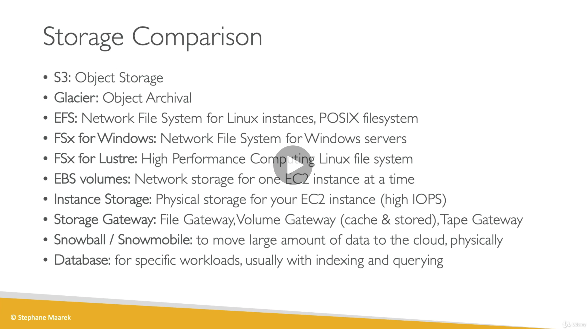

layout: true class: typo, typo-selection --- background-image: url(images/intro_get_started.png) background-repeat: repeat; class: center, middle ??? get started make sure everyone got to where they needed to be --- class: center, middle <img src="images/group_logo.png" alt="group logo"/> ??? - Welcome back all here for the group! Introduce myself and the group ! - no fuss no frills , good ol group learning --- class: center, middle ### Accountability. Support. Resources. Collaboration. Real World Experiences. ??? - **call out ❗️ we are NOT going to teach you the material...** --- class: left, middle # Agenda WWCode Homework Review Exam Material Review Homework Questions/Collab Time --- class: center, middle <img src="images/slides/wwcode_mission.png" alt="WWCode Mission"/> --- class: center, middle <img src="images/slides/wwcode_vision.png" alt="WWCode Vision"/> --- class: center, middle <img src="images/slides/wwcode_code.png" alt="WWCode Code of Conduct"/> --- class: center, middle # [Upcoming Events](https://www.womenwhocode.com/cloud/events) --- class: center # Phase 1 Schedule #### ✅ 8/29: Group Intro + Resource Review #### ✅ 9/12: Udemy Video Reivew 1-8 #### ✅ 9/26: Udemy Video Review 9-17 #### 10/10: Udemy Video Review 18-24 #### 10/24: White paper review + discussions <small>(probably practice quizzes too)</small> #### 10/31 11/14 : Hands on lab and exam practice #### 11/28 Celebrate! Phase 1 Complete --- class: center, middle ## Stay in the know! Join our Slack group! `#aws-studygroup`.<br> Email me! cloud@womenwhocode.com.<br> Follow Allong on Github! `briaugenreich/aws-certification-resources` --- class: middle ## Homework Review 1. Watch 2/3 the lecture series of choice. <small>2. Maybe sign up for exam time?! </small> --- class: center, middle ## Material Review <small>part 2 of 3 </small> --- class: center, middle # Chapter Breakdown <small>For each section we will follow the following: </small> Quick Recap Section Quiz Group Questions/Discussions ??? - KEEP COLLABORATIVE!!! Not me talking... solidfy our learnings in conversation - very brief highlight... dont want to reteach (dont have all fancy graphics) ... but jogg our memories - do the section quiz together ... explain the whys share some of the gotchas - USE NOTE AS A REFERENCE! - WHOS TAKING NOTES!! strongl recommend ...active learning... at least question/look into more points --- ## .wwcodebold[Chapter 9:] Amazon S3 - Simple Storage Service: managed http service for object store - infinite scale - globally unique buckets - not a directory/ file system , just key value pairs - versioning - presigned vs public urls - used to host static websites - read after write consistency on PUTs for new objects - eventually consistent on DELETE/PUTs of existing objects ??? - main buiolding blocks of aws --- ## .wwcodebold[Chapter 9:] Amazon S3 Contd - 4 encryption methods: - SSE-S3: keys managed by AWS completely (AES-256) - SSE-KMS: keys managed by AWS KMS service - SSE-C: keys managed by you - client-side-encyrption: application does the encrypting - Bucket Policies: - define what princples can and cant do on your bucket resources - json based - lots of fun security use cases --- ## .wwcodebold[Chapter 9:] Amazon S3 Contd - CORS: cross origin resource sharing - origin = scheme/protocol + host/domain + port - how your browser implements its own security - we must say our secondary resource is allowed to be accessed from our first resource ??? ANYTHING I MISSED? --- class: center, middle # [Chapter 9 Quiz](https://www.udemy.com/course/aws-certified-solutions-architect-associate-saa-c02/learn/quiz/4586000#overview) --- class: center, middle # Chapter 9 Questions? --- ## .wwcodebold[Chapter 10:] CLI, SDK, IAM Roles & Policies - CLI : command line interface - how to interact with aws resources programatically - installation - NEVER store personal creds anywhere to use CLI <small>except your personal machine</small> - IAM Roles: attached to services to define what they can and cant do - policies define the rules for a given role - can attach one role to many services, but should define one role per service (LEAST PRIVILEGE!) - best to create your own ??? - who uses the cli? - how are keys managed? --- ## .wwcodebold[Chapter 10:] CLI, SDK, IAM Roles & Policies - Instance MedataAPI - lots of great infor about our running instance - only callable within aws network (aka on ec2) - MEMORIZE !! 169.254.169.254/latest/meta-data - SDK: software development kit - supports most languages - enables interaction with aws resources in code - DEFAULT CREDENTIAL PROVIDER CHAIN <small> never store secrets</small> --- class: center, middle # [Chapter 10 Quiz](https://www.udemy.com/course/aws-certified-solutions-architect-associate-saa-c02/learn/quiz/4595068#overview) --- class: center, middle # Chapter 10 Questions? ??? - who uses the cli for automation regularly/soley? - how are keys managed? --- ## .wwcodebold[Chapter 11:] Advance S3 & Athena - S3 MFA delete - require multi factor authentication in order to perminately delete items in s3 - versioning must be enabled - root acct only - cli only - S3 Access logs: - monitor all requests/changes made to s3 bucket and ship logs to another s3 bucket - DO NOT USE THE SAME BUCKET - Cross Region & Same Region Replication - OLD WAY of enabling encryption via bucket policies --- ## .wwcodebold[Chapter 11:] Advance S3 & Athena Contd - S3 Storage Classes!! - S3 Standard General Purpose - S3 Standard Infrequent Access - S3 One Zone Infrequent Access - Intelligent Tiering - Glacier <small>(expidited , standard, bulk) </small> - Deep Archive Glacier (standard, bulk) </small> - Lifecycle Policies: enable us to modify objects automatically - transtion actions : move storage classes - expiration action: delete objects and versions --- ## .wwcodebold[Chapter 11:] Advance S3 & Athena Contd - S3 Select & Glacier Select: - simple filters on data (csvs) from s3 with very Simple SQL - Athena - serverless service to perform complex analytic queries - use of sql or jdbc/odbc driver - accepts many file formats - * exam question on how to analyze data from s3 = athena - s3 event notifcation targets: sns, sqs, lambda - Object/Vault Lock: - adopt WORM (write once read many) model on s3 or glacier - compliance or data requirement use cases --- class: center, middle # [Chapter 11 Quiz](https://www.udemy.com/course/aws-certified-solutions-architect-associate-saa-c02/learn/quiz/4595070#overview) --- class: center, middle # Chapter 11 Questions? --- ## .wwcodebold[Chapter 12:] Cloudfront & Global Accelerator - Cloudfront: content delivery network - improves perfomrance - content cached and distributed via edge locations - DDOS, shield, WAF, geo resitriction protection - can have s3 origin or custom http origin (alb, ex2, s3 website, http backend) - Cloudfront security: - S3: origin access identity (gives cloudfront permission to a particular bucket) - http backentds: security groups must allow ALL of the cloudfront IPs and should be publically accessable - signed urls/ cookies for access to a specific file (url) or multiple files (cookie) for a set time ??? cloudflare vs cloudfront --- ## .wwcodebold[Chapter 12:] Cloudfront & Global Accelerator Contd - Global Accelerator - reduces public interenet network hops to get to aws network/resources as quickly as possible - get 2 anycast IPs that will send user to closes edge location ??? everyone understand any cast vs unicast?? --- class: center, middle # [Chapter 12 Quiz](https://www.udemy.com/course/aws-certified-solutions-architect-associate-saa-c02/learn/quiz/4805175#overview) --- class: center, middle # Chapter 12 Questions? ??? cloudflare vs cloudfront --- ## .wwcodebold[Chapter 13:] Storage Xtras - Snowball : move lotssss of data with a physical transfer solution - snowball: TBs or PBs of data - snowball edge: perform computations while moving data (cleaning, transforming) - snowmobile: exabytes of data transfered... you get a whole truck! - must import to s3 first, can move to glacier with lifecycle policy - Storage gateway: give access to properitary aws services via industry standard apis - file gateway: s3 buckets accessible via NFS or SMB - volume gateway: ebs volumes accessable via ISCSI protocol - tapes : virtual tape librarys accessible via ISCSI protocol (glacier??) - file gateway hardware appliance: the appliance is NOT virtual for small data centers with no virtual capabilities --- ## .wwcodebold[Chapter 13:] Storage Xtras Contd - FSx for windows: like EFS but for windows (since EFS ris for shared POSIX systems on linux only) - mutli az - backup to s3 - accessible on prem - FSx for Luster: parallel distributed file system - LUSTER = linux cluster - High Performance Computing (HPC) , machine learning use cases - s3 integration - accessible on prem --- ## .wwcodebold[Chapter 13:] Storage Xtras Contd  --- class: center, middle # [Chapter 13 Quiz](https://www.udemy.com/course/aws-certified-solutions-architect-associate-saa-c02/learn/quiz/4805183#overview) --- class: center, middle # Chapter 13 Questions? --- ## .wwcodebold[Chapter 14:] Integrations & Messaging Synchronus communication vs asynchronus communication - SQS: simple queue service (fully managed cloud queue) - producers send messages to a queue which are read by consumers - consumers poll for messgages - unlimted throughput and messaging capacity - at least once delivery - best effort ordering EXCEPT with FIFO (but only one consumer then...) - encyrption in flight and at rest - ASG consumers via cloud watch metric on queue length - message visibility timeout !!! - DLQ - Delay Queue --- ## .wwcodebold[Chapter 14:] Integrations & Messaging Contd - SNS: simple notifcation service (fully managed pub sub mechanism) - producers send message to a topic, which broadcasts to mutltiple subscribers - subsribers are pushed messgages - subscribers can be: sqs, https, lamdba, email. SMS, mobile - encyrption in flight and at rest - FAN OUT ARCHITECTURE! SNS + SQS ??? did not understand this at first --- ## .wwcodebold[Chapter 14:] Integrations & Messaging Contd - Kinesis: managed alternative to apache kafka (big data streaming tool) - kinesis stream: low latency streaming ingest... data highway with reprocess and replay capability - kinesis analytics: real time analytics with sql - kinesis firehose: load stream into other AWS services (s3, redsshift, elasticsearch, splunk) - Kinesis Stream: - made of many shards - data is ordered per shard - the partition key of data determine the shard ID - set a highly distributed partition key in order to avoid a "hot partition" - KCL (kinesis client library) to consume from stream efficiently --- ## .wwcodebold[Chapter 14:] Integrations & Messaging Contd - Amazon MQ: for traditional apps to migrate to the cloud using open queue protocols - dont need to rearchtiect for AWS proprietary solutions - AMQP, CQTT , STOMP protocols --- class: center, middle # [Chapter 14 Quiz](https://www.udemy.com/course/aws-certified-solutions-architect-associate-saa-c02/learn/quiz/4586010#overview) --- class: center, middle # Chapter 14 Questions? ??? i thought kafka was a pub sub architecture --- ## .wwcodebold[Chapter 15:] Serverless New paradigm for using cloud services without provisioning/managing Resources -- <small>Lambda S3 Dynamo Cognito API Gateway SNS/SQS Kinesis Firehose Aurora Serverless Step Functions Fargate</small> --- ## .wwcodebold[Chapter 15:] Serverless Contd - Lambda: virtual functions in the cloud - no servers, on demand running, automated scaling - 15 min run time max... other limits to be aware of - up to 3gb of RAM - node, python, java, c#, go, ruby, custom runtime - Lambda Egde: lamda deployed along with CDN @ edge locations --- ## .wwcodebold[Chapter 15:] Serverless Contd - Dynamo DB - serverless database - nosql - made of tables with a primary key - multi az, auto scaling - must set independed Read / Write capacity limits (RCU & WCU)...unless running on demand (2X cost) - introduced idea of transcations ! - global tables for multi region replication - streams (stream = changelog) to be read by lambda - DAX: dynamo db Accelerator - automatic caching for dynamo - prevent hot key (too many reads) problem - 10 nodes max per cache cluster --- ## .wwcodebold[Chapter 15:] Serverless Contd - API Gateway: managed service to create endpoints on various backends - websocket, versioning, authentication built in support - provision multiple environments - swagger docs to import and export - api keys to throttle requests - integrate with: lambda, http backend, aws services - endpoint types: edge optimized, regional, private --- class: center, middle # [Chapter 15 Quiz](https://www.udemy.com/course/aws-certified-solutions-architect-associate-saa-c02/learn/quiz/4595128#overview) --- class: center, middle # Chapter 15 Questions? ??? solidfy when to use api gateway vs alb --- ## .wwcodebold[Chapter 16:] Serverless Architecture Putitng it all together! - dont store credentials with users - think through how to optimize cost throughput - OAI ... dont forget this is how cloudflare -> s3 auth works - Microservice architecture enables us to use serverless and traditional server choices - Will need to create a lot of little services in serverless (creating signed urls service etc) - Cloudfront = easy cost effective solution for static content caching globally --- class: center, middle # [Chapter 16 Quiz](https://www.udemy.com/course/aws-certified-solutions-architect-associate-saa-c02/learn/quiz/4595164#overview) --- class: center, middle # Chapter 16 Questions? --- ## .wwcodebold[Chapter 17:] AWS Databases Questions to ask yourself when choosing dbs: <small> - Throughput ? - Read/Write Balance? - Accessing? - Durability? - Latency? - Data Model? - Strong schema? - License cost? </small> --- ## .wwcodebold[Chapter 17:] AWS Databases RDS <small> relational, oltp, joins, sql </small> Aurora <small> relational, oltp, joins, sql </small> Elasicache <small> key value pairs, caching </small> Dynamo <small> json, nosql </small> S3 <small> big objects </small> Athena <small> s3 queries, data warehouse for s3 </small> Redshift <small> Olap, datawarehouse </small> Neptune <small> graphs </small> Elasticsearch <small> search, text, json </small> --- class: center, middle # [Chapter 17 Quiz](https://www.udemy.com/course/aws-certified-solutions-architect-associate-saa-c02/learn/quiz/4595534#overview) --- class: center, middle # Chapter 17 Questions? --- class: middle ## Homework 1. Watch remaining videos the lecture series of choice. 2. Start taking practice quizes <small> [Whizlab Practice Exams](https://www.whizlabs.com/aws-solutions-architect-associate/) [AWS Practice Exam](https://www.aws.training/certification?src=exam-prep) [A Cloud Guru Practice Exam](https://acloud.guru/learn/aws-certified-solutions-architect-associate) [Cloud Academy Practice Exam Questions](https://cloudacademy.com/quiz/36025/) [Cloud Academy General Quizzes](https://cloudacademy.com/library/amazon-web-services/quizzes/) </small> <small>Maybe sign up for exam time?!</small> --- class: center, middle ## Check In?? ??? - how are meeting? - zoom info make sense? - what do you need more of? --- class: center, middle ## .wwcodebold[Questions] & .wwcodebold[Collab Time] ??? - exam guide -> https://d1.awsstatic.com/training-and-certification/docs-sa-assoc/AWS-Certified-Solutions-Architect-Associate_Exam-Guide.pdf - Sample Questions -> https://d1.awsstatic.com/training-and-certification/docs-sa-assoc/AWS-Certified-Solutions-Architect-Associate_Sample-Questions.pdf